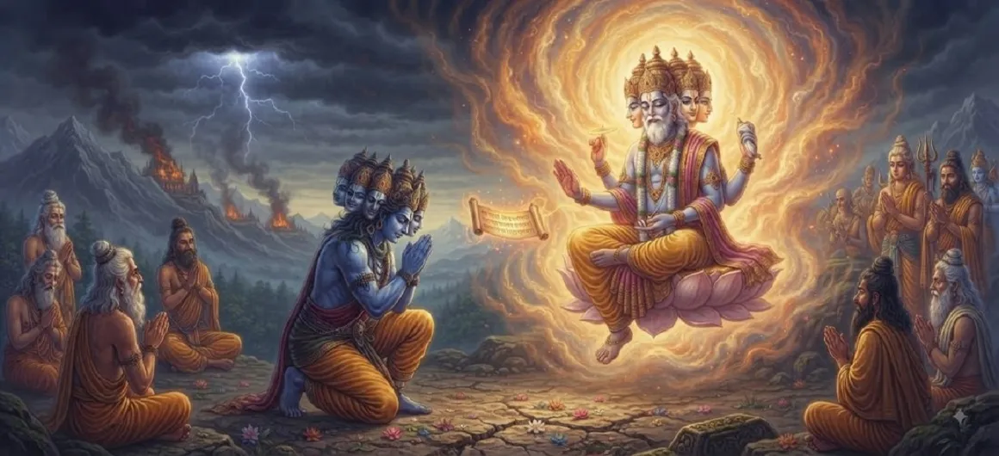

The Boon of Tārakāsura
The third chapter of the Kumara Khanda reveals the origin of Tārakāsura’s extraordinary power. Through centuries of rigorous penance and unwavering austerity, the demon king compelled Lord Brahma to appear and grant him supreme protection.
Believing himself cleverer than the cosmic laws, Tārakāsura requested a boon that he calculated would guarantee his absolute immortality, planting the very seed of his future destruction.
Chapter 3 Highlights
Fierce Penance
Tārakāsura's rigorous austerities in the forest.
Brahma's Appearance
The creator god pleased by devotion.
The Cunning Wish
Asking for protection from all common forms of death.
The Special Condition
Death possible only by Shiva's direct progeny.
Flawed Calculation
Assuming Shiva would forever remain unmarried.
Seed of Destruction
The loophole that seals the demon's fate.
Core Topics in This Chapter
Tārakāsura’s Rigorous Austerities
Motivated by an intense desire to conquer the universe, Tārakāsura retires to a secluded forest and engages in punishing penance. He stands on one foot, controls his breath, and subjects his body to extreme heat and cold.
His fierce determination attracts the attention of the cosmic powers.
Appeasing Lord Brahma Through Devotion
Impressed by the depth of his austerity and unyielding focus, Lord Brahma manifests before the demon. Brahma acknowledges that penance, even when performed by dark forces, must yield its ordained fruits.
Brahma asks Tārakāsura to state his desired boon.
Formulating the Cunning Boon
Recognizing the laws of mortality, Tārakāsura avoids asking for direct immortality, knowing it is impossible. Instead, he crafts a cunning condition designed to evade death from all ordinary beings.
He seeks protection from all gods, demons, and men.
The Loophole Concerning Lord Shiva's Son
Knowing that Lord Shiva is perpetually immersed in deep meditation, asceticism, and celibacy, Tārakāsura believes a son born directly from Shiva is an utter impossibility. Hence, he demands that his death be possible only by such a son.
This strategic loophole forms the core of his perceived invincibility.
Brahma Bestowing the Invincibility
Bound by the cosmic rules governing penance and boons, Lord Brahma grants the requested boon. With these words, Tārakāsura receives the ultimate weapon of invulnerability against the current cosmic order.
Brahma departs, leaving the demon in possession of unmatched power.
The Surge of Unbounded Hubris
Armed with Brahma's blessing, Tārakāsura’s arrogance swells beyond measure. He discards all fear of retribution, feeling secure in his clever trickery against the natural order of the universe.
This unchecked hubris leads directly to his campaign of global tyranny.
Transition to Chapter 4 (The Gods Seek Lord Shiva)
Having understood how Tārakāsura secured his invincible status through Brahma's boon, the narrative now shifts to the desperate response of the Devas as they seek out Lord Shiva for salvation.
The next chapter unveils their journey toward the supreme ascetic.
Key Teachings of Chapter 3
Power of Penance
Dedication yields results even in wrong hands.
Law of Boons
Divine creators honor sincere austerity.
Flawed Cunning
Ego blinds individuals to ultimate divine will.
Seeds of Solution
Every problem contains its destined cure.
Shiva's Unique Stature
Only the supreme ascetic holds the key to balance.
Inevitable Balance
Nature always provides a counterforce to tyranny.
Spiritual Reflection
Tārakāsura’s boon illustrates how intellectual cleverness and ego can attempt to bypass spiritual truth. However, divine justice always incorporates a higher wisdom that circumvents human or demonic cunning, ensuring righteousness ultimately prevails.
Living the Message of Chapter 3
Direct your dedication and focus toward noble, selfless pursuits rather than selfish manipulation.
Recognize that no amount of clever cunning can permanently overcome universal spiritual laws.
Trust that when challenges seem insurmountable, higher divine solutions are already in motion.
Key Spiritual Concepts
Severe, punishing ascetic penance undertaken to invoke divine boons.
The boon granted by the creator Lord Brahma based on austerity.
The vain attempt by egoistic beings to trick the laws of mortality.
The prophesied birth originating from Lord Shiva to restore cosmic balance.
The supreme, unbreakable decree of divine destiny.
The inevitable downfall that follows excessive, unchecked arrogance.
Chapter Summary
Kumara Khanda Chapter 3 details Tārakāsura’s intense penance, Lord Brahma’s granting of the powerful boon, and the strategic condition that his death can only be brought about by a son of Lord Shiva.
Frequently Asked Questions
1. What is the primary focus of Kumara Khanda Chapter 3?
Chapter 3 focuses on how Tārakāsura performed fierce penance to please Lord Brahma and earned the extraordinary boon that made him seemingly invincible.
2. Who granted the boon to Tārakāsura?
The boon was granted by Lord Brahma, the creator of the universe, pleased with Tārakāsura's rigorous ascetic practices.
3. What was the loophole or condition regarding Tārakāsura's death?
Believing that Lord Shiva would remain detached and unmarried, Tārakāsura asked that he could only be slain by a son born directly from Lord Shiva.
4. What is the next chapter after Chapter 3?
The next chapter is titled 'The Gods Seek Lord Shiva'.
“Even the cleverest boons forged by ego carry within them the precise seed of their own undoing, orchestrated by the unerring hands of divine providence.”
Continue Through Kumara Khanda
Chapter 3 explains Tārakāsura's boon. Continue to the next chapter, The Gods Seek Lord Shiva.